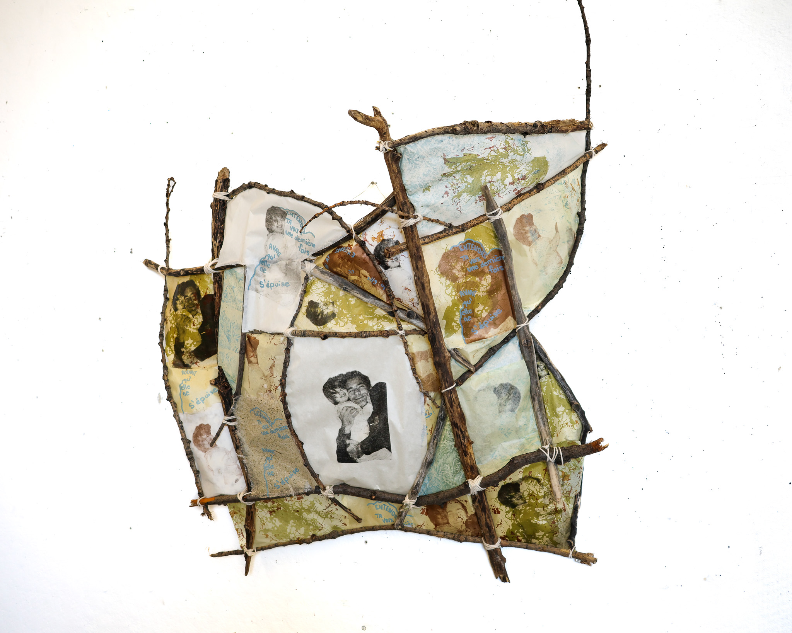
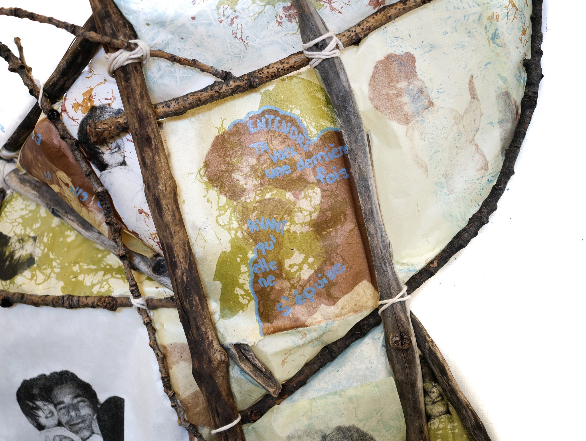
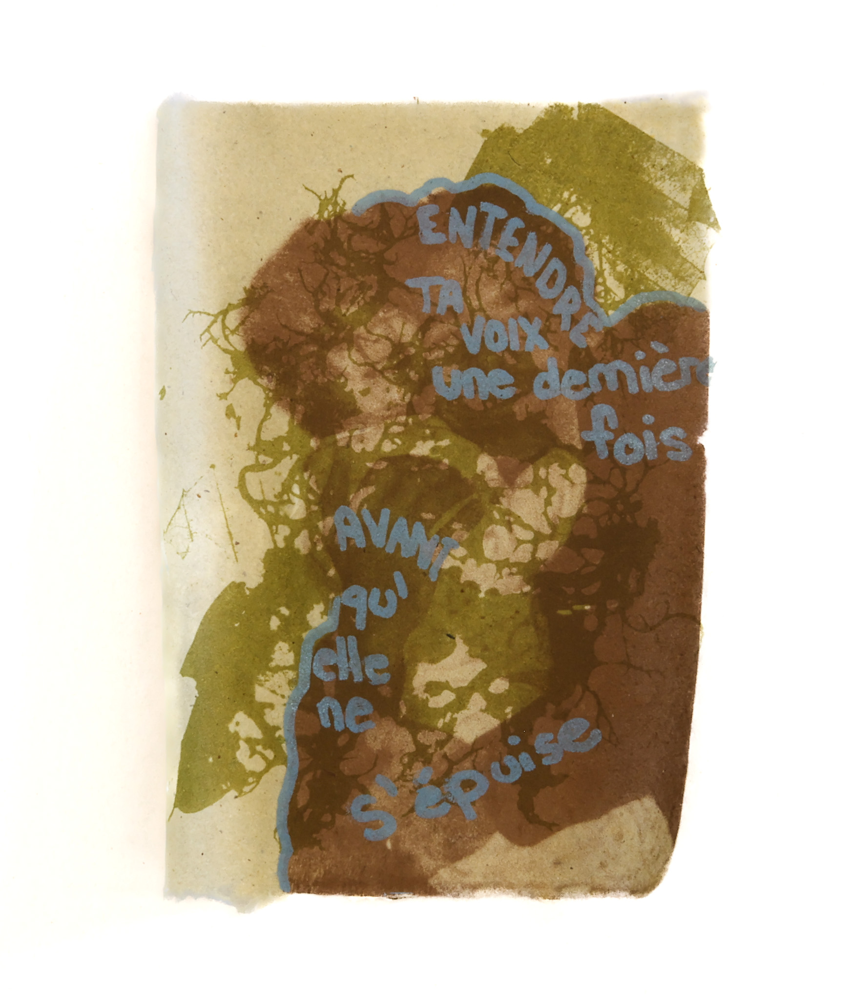
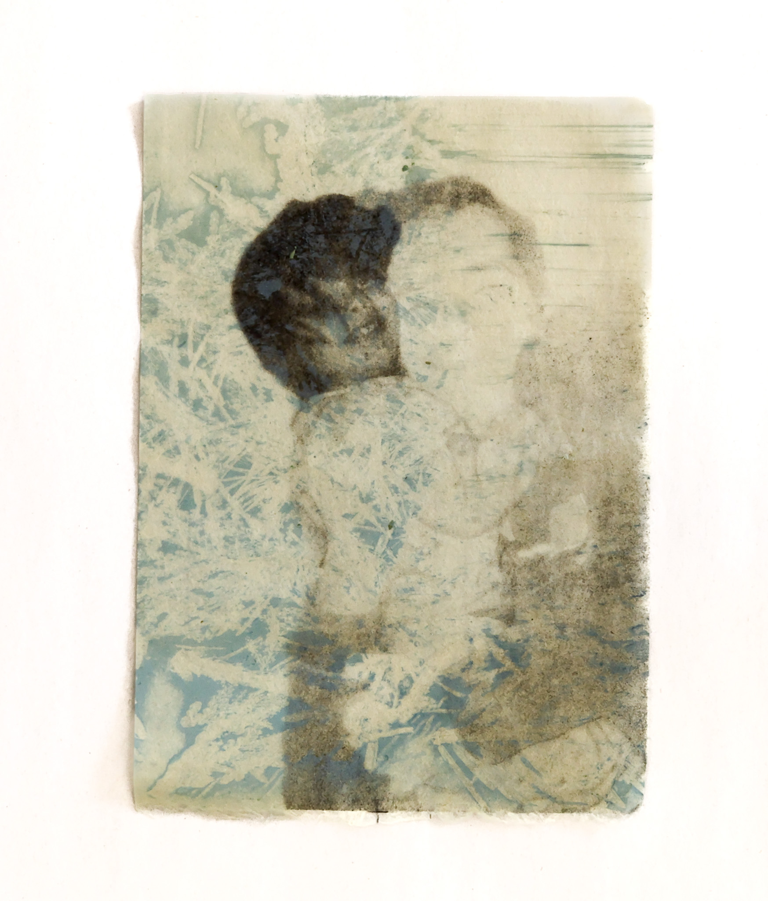
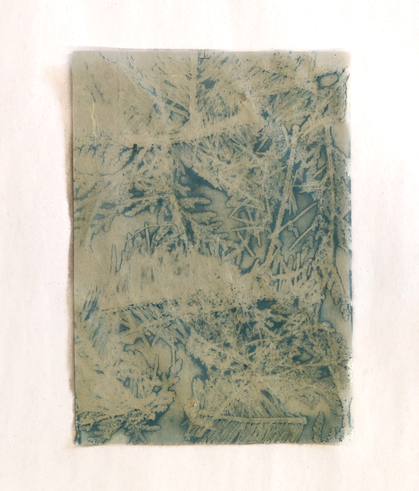
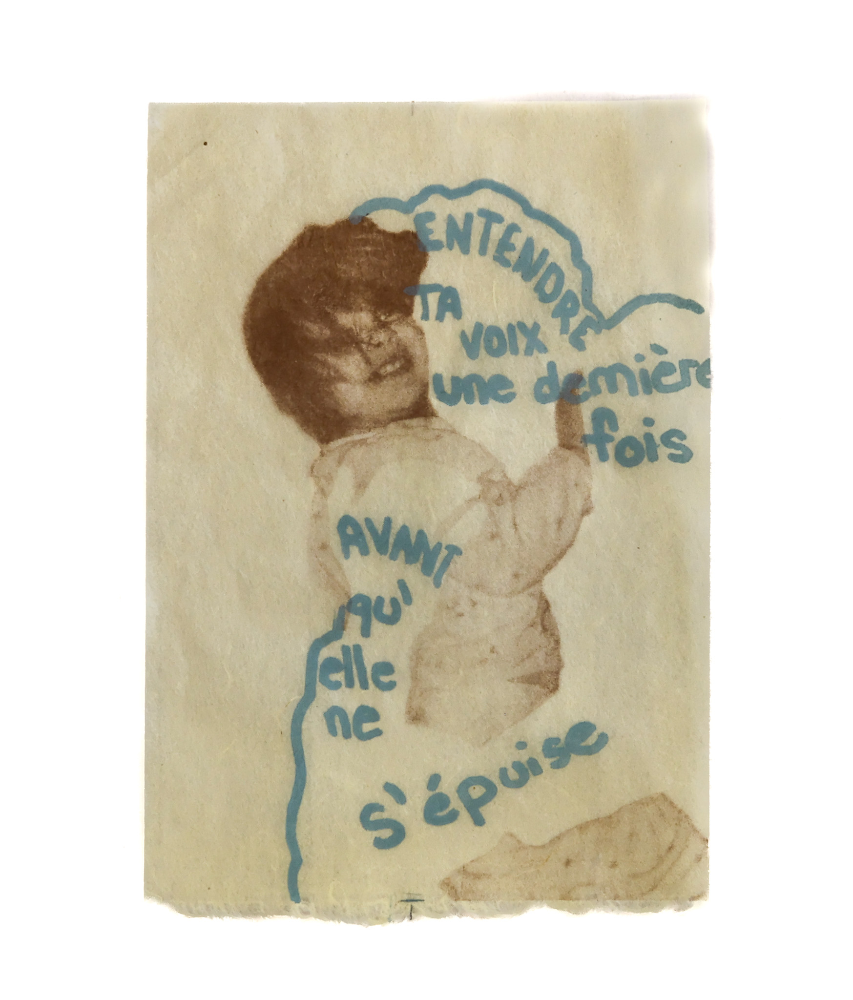

Mon père sans voix, 2025
Pour le projet Mon père sans voix, j’ai dévié de mes thématiques habituelles pour relier le vivant à une expérience personnelle: l’aphasie de mon père. À travers des photolithographies où on le voit s’effacer dans le décor et devenir texte ou nature, je tente de décrire ce que je ressens de façon poétique et intangible. Il était important pour moi de trouver une installation fluide pour mes estampes ; j’ai donc opté pour l’usage de branches d’arbres, en référence à mon chalet familial.
La lithographie m’a permis ici de répéter une même scène en la transformant à chaque impression, créant un effet de décrescendo visuel.





